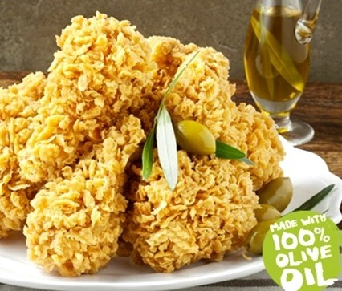
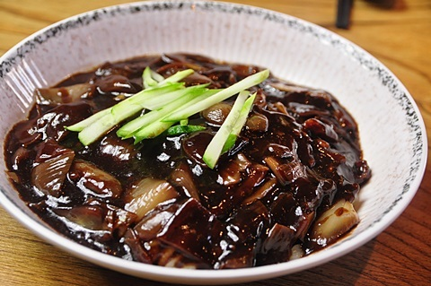
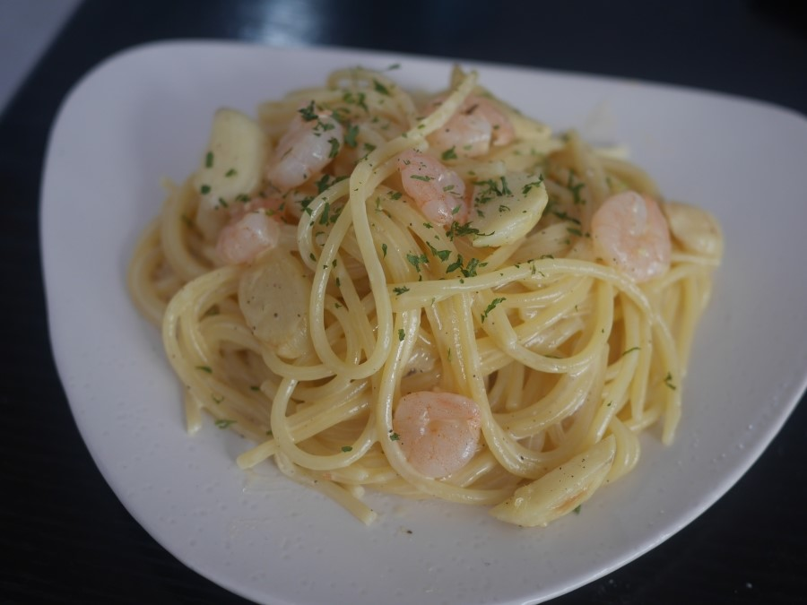
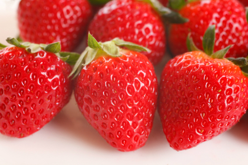
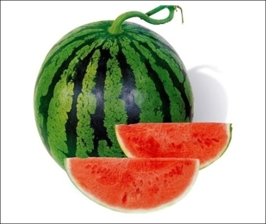
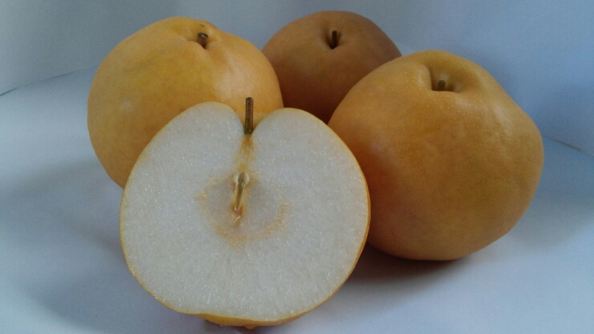
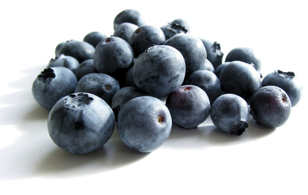
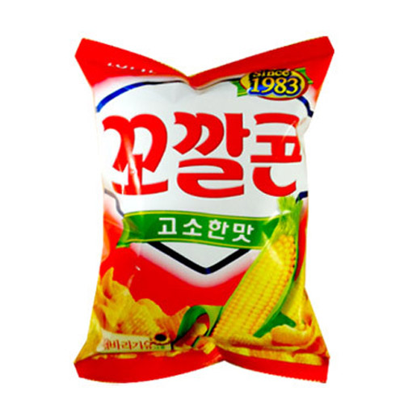
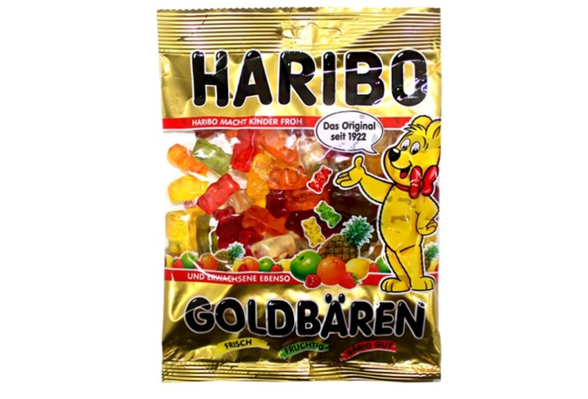
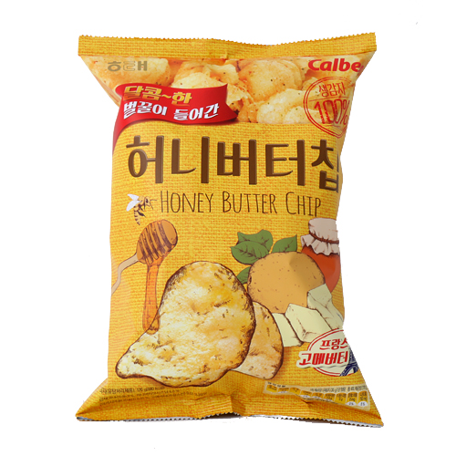

- GreatDay가 좋아하는 게임
- GreatDay가 좋아하는 음식
- GreatDay가 사용하는 또다른 닉네임
GreatDay가 좋아하는 음식
GreatDay가 좋아하는 음식에 대해서 소개를 하도록 하겠습니다. 음식이라고 하면 폭이 되게 넓습니다.
그러니, 음식을 요리,과일,과자로 나누어 소개를 하도록 하겠습니다.
- 요리
- 치킨

bbq 황금 올리브가 가장 맛있는 것 같습니다.
- 짜장면

- 탕수육
- 라면

- 까르보나라

등등..
- 과일
- 딸기

- 수박

- 배

- 블루베리

등등..
- 과자
- 썬칩
판매가 중단되서 슬픕니다.
- 꼬깔콘

- 하리보

- 허니버터칩
